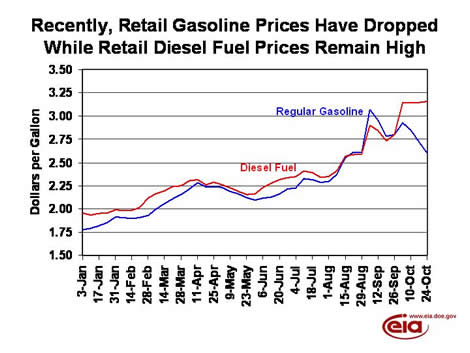

EIA Home > Petroleum > This Week In Petroleum
|
|
This Week In Petroleum EIA Home > Petroleum > This Week In Petroleum |
Released on October 26, 2005
(Next Release on November 2, 2005)
Diesel Prices Remain Elevated
Even as retail gasoline prices have fallen below pre-hurricane levels, retail diesel fuel
prices remain much higher. Whereas retail diesel prices averaged 2 cents per gallon below
gasoline on August 29, before the impacts of Hurricanes Katrina and Rita were felt at the pump,
as of October 24, they averaged more than 55 cents per gallon higher across the United States
(see graph below). What has changed between the two markets that might help explain the
divergence in retail prices?

While the price of crude oil certainly has an impact on the price of refined products, the actual cost of refining crude oil into various products has little to do with price differentials across products. When comparing the retail price of one particular product to another, it is important to look at the supply/demand situation for both products. In the case of gasoline, over the last four weeks, a record volume of imports arrived in three of those weeks, while gasoline production climbed to near pre-hurricane levels, despite significant refinery capacity remaining shut down. This large surge in supply is coming at a time (late September and early October) when gasoline demand usually drops, with few people taking vacations during this time of year. When supplies rise as demand falls, prices should fall, as they have with gasoline.
However, the supply/demand balance is much different for diesel fuel. Diesel fuel and heating oil are both included in a category labeled distillate fuel in our weekly surveys. These products are very similar, with the notable exception that diesel fuel for highway use has less sulfur in it. To the extent that diesel fuel can be used as a substitute for heating oil, the two products often find their prices moving in similar directions. Since heating oil prices are generally highest when demand for the product peaks, diesel prices also often peak as cold weather occurs, as owners of diesel-fuel-powered vehicles will tell you. As can be seen from EIA’s data, demand for distillate fuel often increases from September to October. This is typically a result of slightly colder weather in October, but it also relates to increased use of diesel fuel in the agriculture sector during harvest time. While demand for distillate fuel seasonally increases over this period, supplies have grown substantially less than those of gasoline. While distillate fuel production has increased some as a result of most refineries returning to normal operating levels following the hurricanes, it has not grown by nearly as much as gasoline production. We have not seen record imports for distillate fuel either. In fact, up until last week (the week ending October 21), distillate fuel imports were possibly even lower than they typically would be, as strong global demand for diesel may have limited available supplies from other countries. As a result, retail prices for both diesel fuel and heating oil have not dropped like those for gasoline. Nevertheless, with distillate fuel imports last week reaching their highest level since January 2005, and with most of the increase in refinery production seen in distillate fuel rather than gasoline, there may be signs that the distillate fuel supply situation is improving. But with the first bout of much colder-than-normal weather hitting the East Coast this week (where most of the heating oil use occurs), demand is likely to increase as well. How fast supply and demand for distillate fuel rise will be the largest determinant for the future path of diesel fuel prices.
For the latest information on how oil infrastructure is being impacted in the aftermath of Hurricane Katrina, see EIA’s Daily Report and more detailed reports from the Office of Electricity Delivery & Energy Reliability.
Residential Heating Oil Price Dips While Propane Price Inches Up
Residential heating oil prices decreased slightly for the period ending October 24, 2005. The
average residential heating oil price fell 2.7 cents from last week to reach 262.3 cents per
gallon, an increase of 56.3 cents from this time last year. Wholesale heating oil prices
decreased 7.6 cents to reach 202.6 cents per gallon, an increase of 38.7 cents compared to
the same period last year.
The average residential propane price increased 0.2 cent, to 195.1 cents per gallon. This was an increase of 29.4 cents over the 165.7 cents per gallon average for this same time last year. Wholesale propane prices decreased 3.0 cents per gallon, from 122.4 cents to 119.4 cents per gallon. This was an increase of 13.0 cents from the October 25, 2004 price of 106.4 cents per gallon.
U.S. Average Retail Gasoline Price Drops 12 Cents
The U.S. average retail price for regular gasoline decreased by 12.2 cents to 260.3 cents per
gallon, falling for the third week in a row. This week’s price is 57.1 cents higher than this
time last year. Prices were down throughout the country, with the Midwest seeing the largest
regional decrease of 14.3 cents to 245.1 cents per gallon, the lowest regional price in the
country. East Coast prices fell by 13.1 cents to 263.5 cents per gallon. The West Coast
averaged 279.7 cents per gallon, the highest regional average price in the country, after
falling 7.5 cents; California prices also lost 7.5 cents to 282.7 cents per gallon.
Retail diesel fuel prices rose 0.9 cent to reach 315.7 cents per gallon, the highest price on record. Prices were mixed throughout the country, with the Midwest seeing the largest regional increase of 9.1 cents to 323.5 cents per gallon, the highest regional average price in the country. The average retail diesel price also rose in the Rocky Mountain region, increasing 5.4 cents to average 323.2 cents per gallon. East Coast prices were down 6.5 cents to 305.1 cents per gallon, the lowest regional price in the nation. California prices averaged 315.2 cents per gallon, a decrease of 5.8 cents.
Propane Inventories Continue Late-Season Build
Propane inventories continued their late-season build last week, posting a gain of 0.6
million barrels to end the week of October 21, 2005 at an estimated 68.1 million barrels.
For the second consecutive week, record imports contributed to boost inventories higher,
although propane production also continued to show modest recovery as production facilities
slowly make post-hurricane repairs. East Coast inventories posted the largest weekly gain
with 0.6 million barrels, while Midwest inventories remained unchanged during this same time.
Despite strong imports into the region, Gulf Coast inventories fell by 0.1 million barrels,
most likely reflecting pipeline movements of propane to other areas in the Midwest and East
Coast as markets prepare for the winter heating season. The combined Rocky Mountain/West Coast
region was the only other area to show a weekly gain, measuring 0.1 million barrels.
Propylene non-fuel use inventories continued their recent downward trend, plunging 0.4
million barrels to 3.6 million barrels by the end of last week. With last week’s drop,
propylene non-fuel use inventories now account for only 5.3 percent of total propane/propylene
inventories.
Text from the previous editions of “This Week In Petroleum” is now accessible through a link at the top right-hand corner of this page.
|
|
||||||||||||||||||||||||||||||||||||||||||||||||||||||||||||||||
|
||||||||||||||||||||||||||||||||||||||||||||||||||||||||||||||||
|
||||||||||||||||||||||||||||||||||||||||||||||||||||||||||||||||
|
||||||||||||||||||||||||||||||||||||||||||||||||||||||||||||||||
|
|